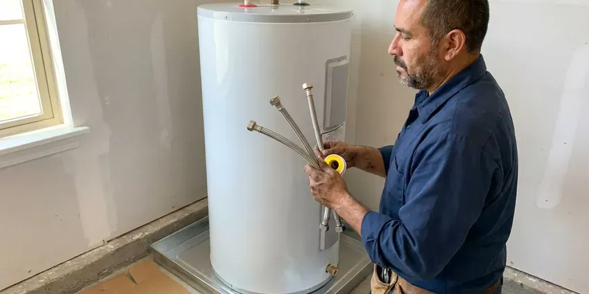
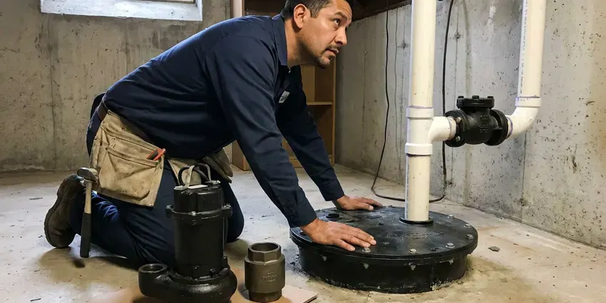

Backflow Preventer Installation in Madison, WI
Need a backflow preventer installed in Madison, WI? HKV Plumbing provides expert, code-compliant service to keep your water safe and clean.
- Fast, Local Service
- Upfront Pricing
- Licensed Wisconsin Plumbers
- Code-Compliant Systems
Protect Your Water Supply With the Right Backflow Assembly in Madison, WI.
Call HKV Plumbing today for expert backflow preventer installation that meets all local codes.
Professional Backflow Preventer Installation in Madison, WI
At HKV Plumbing, we understand the importance of a properly installed backflow prevention device. Our team handles everything from initial assessment to final inspection, so your new system provides reliable protection against hazardous substances entering your drinking water in Madison.
Our expertise includes:
- Professional installation of all device types.
- Certified backflow prevention specialists.
- Initial certification testing and water provider report filing

Additional Plumbing Installation Services in Madison, WI
We install water heaters, pumps, lines, and fixtures across Madison, WI with careful, permitted work that passes inspection the first time.



Professional water heater installation, Madison


Customers
Why Choose HKV Plumbing for Backflow Preventer Installation in Madison, WI?
Choosing the right plumbing partner for backflow preventer installation is important for your health and property. We install high-quality devices designed to prevent contaminated water from flowing back into your clean water lines.
- Water Safety, A backflow preventer keeps contaminated water from flowing back into your clean drinking water supply.
- Tested Onsite, Certified testers check every new device before it goes into service.
- Code Compliance, Many municipalities in Wisconsin require backflow preventers for certain plumbing connections, and we make sure you meet all local codes.
Citywide Coverage
We install backflow preventers throughout Madison, from single-family irrigation systems to strip centers and medical offices. Our trucks carry common sizes from 3/4 inch to 2 inch so most jobs are finished in a single visit.
Experienced Team
Our team of licensed plumbers has extensive experience installing a wide range of backflow prevention devices. They receive ongoing training to stay current on the latest technology and local plumbing codes in Wisconsin.
Safety-First Approach
We make sure every backflow preventer installation meets strict safety standards and all applicable Wisconsin regulations. Our meticulous approach protects both your property and your family's health from water contamination.
Trusted Certified Madison Plumbing Services Professionals
At HKV Plumbing, we take pride in providing licensed, certified plumbing services throughout Madison, WI. Backed by recognized industry credentials, our experienced plumbers combine technical skill with genuine customer care. Whether it is repair, installation, or maintenance, we follow strict safety and quality standards to deliver lasting results you can trust.
Call Us Now PHCC Plumbing Contractor Recognition
PHCC Plumbing Contractor Recognition Better Business Bureau (BBB) Accreditation
Better Business Bureau (BBB) Accreditation Angi Certified Pro
Angi Certified Pro ISO 9001 Quality Management Certification
ISO 9001 Quality Management CertificationTrusted Backflow Preventer Installation Services in Madison, WI
Code-Compliant Backflow Installation in Madison, WI
Sorting out the plumbing codes for backflow prevention in Madison, WI can be challenging. HKV Plumbing stays up to date with local and state regulations so every installation is fully compliant. Water heater replacements, new plumbing in remodels and sewer lateral work usually require a permit and inspection. From proper device selection and placement to required permits and inspections, we handle every part of code compliance. Your system works as intended and avoids fines or costly rework down the line.

Emergency Backflow Preventer Replacement in Madison
While installations are typically planned, sometimes an existing backflow preventer fails suddenly, creating an urgent need for replacement in Madison. A compromised backflow device can lead to immediate contamination risks or code violations. HKV Plumbing offers emergency replacement service to promptly assess the situation, remove the faulty unit and install a new, code-compliant backflow preventer, restoring your water safety as fast as possible.
Understanding Backflow Preventer Installation Costs in Madison, WI
The cost of backflow preventer installation in Madison, WI varies with the device type, size, location and complexity of the plumbing changes required. A residential irrigation system and a large commercial water main will be priced quite differently. HKV Plumbing provides transparent, upfront quotes after a careful assessment of your property. We aim to offer competitive pricing for high-quality, code-compliant installations that protect your investment and health.
Backflow Preventer Brands We Install in Madison
HKV Plumbing works with leading backflow preventer brands known for reliability and durability. We regularly install devices from manufacturers such as Watts, Wilkins by Zurn, Apollo and Conbraco. Our experience with these brands means you receive a high-quality, long-lasting solution built to handle the water conditions and pressures in Madison plumbing systems. We can also advise on models that best fit your budget and application.
Backflow Testing and Certification in Madison
Most water providers require testable backflow assemblies to be certified at installation and then once a year. Our certified testers check each valve's opening point, relief valve operation and differential pressure. If a device fails, we can repair or rebuild it right away with genuine parts. We submit passing results so you avoid compliance letters or service interruption.
Pool and Spa Fill Backflow Protection in Madison, WI
An auto-fill line or hose connection on a pool or spa creates a direct path for chlorinated water to reach the supply. We install the correct device on pool fill lines and check that hose bibbs have vacuum breakers. This simple step protects your household water and keeps you in line with local code. We can add the work when a pool is being built or remodeled.
Reduced Pressure Zone (RPZ) Assembly Installation in Madison
RPZ assemblies offer the highest level of backflow protection and are often required for high-hazard applications in Madison. These devices feature two independent check valves and a relief valve that opens to discharge water if pressure differentials indicate a backflow condition. HKV Plumbing specializes in precise RPZ installation, with proper sizing, placement and testing to meet all regulatory requirements for residential and commercial properties. We work with trusted brands like Watts and Febco.

Backflow Preventer Installation Cost Comparison in Madison, WI
A residential pressure vacuum breaker is the most affordable option, while larger RPZ assemblies for commercial buildings cost significantly more in parts and labor. Size, brand, enclosure needs and how much existing pipe must be modified all affect the price. Replacing a failed old device with a new one is usually cheaper than repeated rebuilds. We give you an itemized quote that includes the initial certification test.
Backflow Preventer Installation Near Me in Madison, WI
If your water provider sent a notice and you are looking for backflow preventer installation near me, give us a call. We can usually schedule installation and testing within a few days. We will make sure the device we install meets the specific requirement in your notice.
When you search for 'backflow preventer installation near me' in Madison, WI, HKV Plumbing is your trusted local expert. We are very familiar with the plumbing challenges and municipal requirements across the entire Madison area.
HKV Plumbing at a Glance
- Fully licensed plumbing team covering Madison, WI
- 24/7 emergency service with same-day scheduling
- Clear written estimates, no hidden fees
- 4.8-star rated by 448+ Wisconsin customers
Madison Map
Madison Information
- Population
- 280,305
- Area codes
- 608/920/262
- Service area
- Madison and communities within 40 miles
- Nearby
- Janesville, Waukesha, Wauwatosa, West Allis
Installing a backflow preventer is important for homes in Madison, WI to protect against contamination from irrigation systems and other auxiliary water uses, especially as seasonal water demand rises and falls.
Expert Services
Trust our professionals for reliable HKV Plumbing solutions in Madison, WI.
Our Specialized Plumbing Services in Madison, WI
At HKV Plumbing, we provide a complete range of plumbing services across Madison, WI. From leak detection to full system installations, our team ensures fast, precise, and affordable service for both residential and commercial properties. Explore our core services below:


How Our Backflow Preventer Installation Process Works in Madison, WI
Here is how we go from your first call to a certified, documented backflow assembly.
Request a Quote
Contact HKV Plumbing at (414) 432-4641 to schedule an initial consultation. We will discuss your needs and provide a detailed, transparent quote for your backflow preventer installation.
Site Assessment
Our certified plumber will visit your Madison property to assess your plumbing system, locate potential cross-connections and determine the type and size of backflow prevention device required by code.
Professional Installation
We meticulously install your new backflow preventer, making sure all connections are secure and the device is properly positioned and tested according to Wisconsin plumbing standards.
Frequently Asked Questions About Backflow Preventer Installation in Madison
The cost for backflow preventer installation in Madison, WI can range from approximately $300 to $1,500, depending on the type of device required, such as a DCVA or an RPZ, the complexity of the installation and any changes needed to existing plumbing. Commercial installations with larger devices may cost more. We provide a detailed, upfront quote after an on-site assessment.
Most water providers require testable assemblies to be tested at installation and then annually. Some high hazard facilities may be tested more often.
Most manufacturers offer one to five year warranties depending on the model. We also warranty our installation labor and will go over the coverage with you.
Many jurisdictions require a permit for new backflow assemblies, especially on commercial properties. We check local rules and pull the permit when needed.
Most municipalities require annual testing of backflow preventers by a licensed, certified backflow tester. This confirms the device is working correctly and continues to protect your potable water supply from contamination. We can also assist with scheduling these annual tests.
Yes, HKV Plumbing stands behind our work. We offer a warranty on our backflow preventer installations, covering both the workmanship and the installed device. Specific warranty details will be included with your quote and invoice, giving you peace of mind.
It depends on the hazard and local rules. Irrigation usually uses a PVB or double check, while high hazard connections like commercial kitchens or chemical injection require an RPZ.
We install Watts, Febco, Wilkins by Zurn and Apollo assemblies. Each has readily available repair kits, which keeps future service affordable.
What People Are Saying About Our Plumbing Experts?

Patricia H.
We had a slab leak that two other companies could not find. HKV Plumbing located it in under an hour, explained our options, and the price matched the quote to the dollar.
Slab Leak Repair · Wauwatosa, WI
James P.
Our commercial plumbing system had a leak under the sink, and HKV Plumbing handled it professionally. The plumbers arrived quickly and restored everything without disruption to our customers.
Commercial Plumbing · Waukesha, WI
Laura S.
I scheduled a water heater replacement, and the team made the process smooth and affordable. The new unit works perfectly, and they cleaned up after completing the job.
Water Heater Replacement · Oshkosh, WISofia M.
Two new toilets installed in one visit, no mess left behind, and the tech even adjusted a faucet he noticed was dripping. Fair pricing and really friendly.
Toilet Installation · Oshkosh, WIRobert G.
The trenchless sewer replacement saved our front yard. They walked us through the camera inspection footage first so we knew exactly what we were paying for.
Sewer Line Replacement · Janesville, WI
Mark T.
When our office needed drain cleaning, HKV Plumbing provided quick, reliable service. The plumber arrived on time and made sure every drain flowed perfectly before leaving. Very satisfied.
Drain Cleaning · Wauwatosa, WI